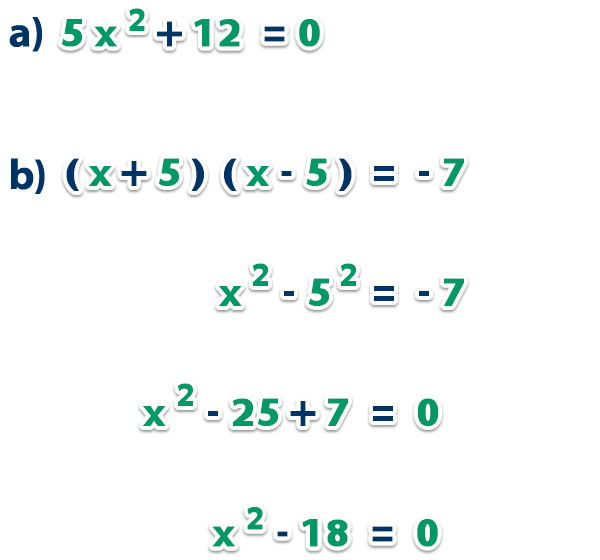

se resuelven utilizando la fórmula general o mediante la factorización. La fórmula general es: x = (-b ± √(b² - 4ac)) / 2a, donde a, b y c son los coeficientes de la ecuación cuadrática ax² + bx + c = 0. La factorización consiste en encontrar dos números que, sumados, den el coeficiente b y, multiplicados, den el coeficiente c. Métodos para resolver ecuaciones de segundo grado con una incógnita:
p1. Fórmula general: Pasos:
Identificar los coeficientes a, b y c en la ecuación cuadrática ax² + bx + c = 0. Sustituir estos valores en la fórmula general: x = (-b ± √(b² - 4ac)) / 2a. Resolver la raíz cuadrada (b² - 4ac), conocida como el discriminante. Calcular los dos posibles valores de x, uno usando el signo más (+) y otro usando el signo menos (-). Verificar que los resultados sean correctos, sustituyendo los valores de x en la ecuación original.
Ejemplo: Para la ecuación x² + 2x - 8 = 0, a = 1, b = 2 y c = -8. Aplicando la fórmula: x = (-2 ± √(2² - 4 * 1 * -8)) / (2 * 1) x = (-2 ± √(36)) / 2 x = (-2 ± 6) / 2 x₁ = 2 y x₂ = -4
2. Factorización: Pasos: Buscar dos números que, sumados, den el coeficiente b y, multiplicados, den el coeficiente c. Reescribir la ecuación cuadrática como el producto de dos binomios: (x + número 1)(x + número 2) = 0. Igualar cada binomio a cero y resolver para x. Verificar los resultados.
